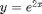
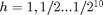
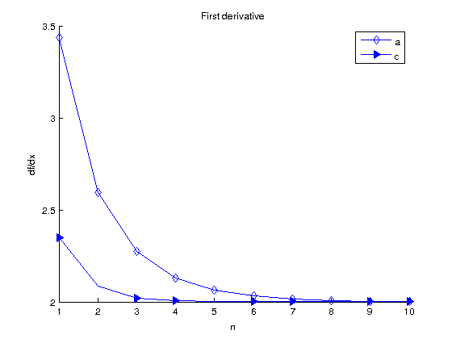
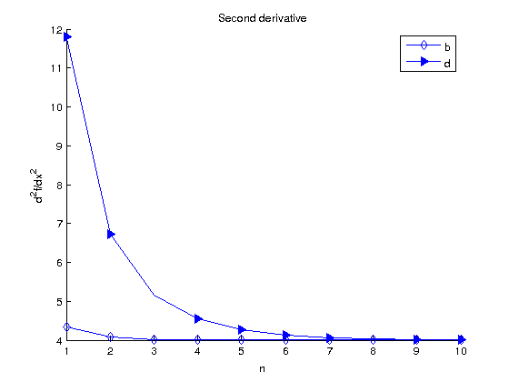
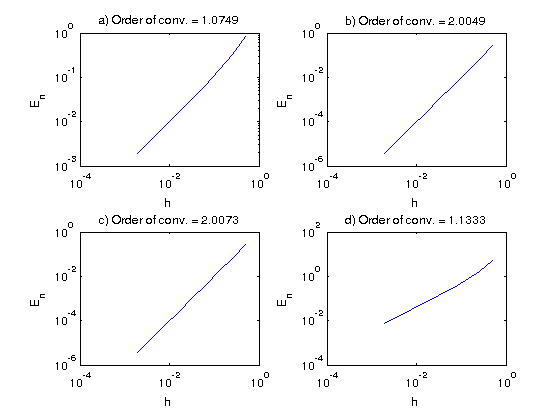

Math 340 - Lab #8 - Numerical differentiation
Contents
#1
The following methods provide approximations of or . Use the function

and x=0 to figure out which of the following schemes approximates and which approximate . Use
.a) difference scheme
b) dfference scheme
c) the difference scheme
d) the difference scheme
Plot your results for all values of h on same axes for the methods approximating y'. Make sure to include axis labels, title and legend.
Plot your results for all values of h on same axes for the methods approximating y''. Make sure to include axis labels, title and legend.
Find the order of convergence of each method by computing the error vs h. (You can do this by using methods taught earlier in the course or use a plot of error vs log h)
Example
This is an example code for backward difference scheme for y' at x = 0
clear all; clc
f = @(x) exp(2.*x);
x = 0; h = 1/2;
dy = (f(x) - f(x-h))/h;
Derivatives
clear all; clc
f = @(x) exp(2.*x);
x = 0; n = [1:10]; h = 1./2.^n;
dy(1,:) = (f(x+h) - f(x))./h;
dy(2,:) = (f(x+h)-2.*f(x) + f(x-h))./(h.^2);
dy(3,:) = (f(x+h) - f(x-h))./(2.*h);
dy(4,:) = (f(x+2.*h)-2.*f(x+h)+f(x))./(h.^2);
First derivative methods
figure(1) line_fewer_markers(n, dy(1,:), 10, 'd', 'MarkerSize', 7); line_fewer_markers(n, dy(3,:), 7, '>', 'MarkerSize', 7, 'MarkerFaceColor','b'); title('First derivative') xlabel('n'), ylabel('df/{dx}') legend('a','c')

Second derivative methods
figure(2) line_fewer_markers(n, dy(2,:), 10, 'd', 'MarkerSize', 7); line_fewer_markers(n, dy(4,:), 8, '>', 'MarkerSize', 7, 'MarkerFaceColor','b'); title('Second derivative') xlabel('n'), ylabel('d^2f/{dx}^2') legend('b','d')

Order of convergence
figure(3) part = ['a', 'b', 'c', 'd'] for i = 1:4 subplot(2,2,i) loglog(h(1:end-1),abs(dy(i,1:n(end)-1)-dy(i,2:n(end)))) p_1 = polyfit(log(h(1:end-1)),log(dy(i,1:n(end)-1)-dy(i,2:n(end))),1); title([part(i) ,') Order of conv. = ',num2str(p_1(1))]) xlabel('h'), ylabel('E_n') end
part = abcd
